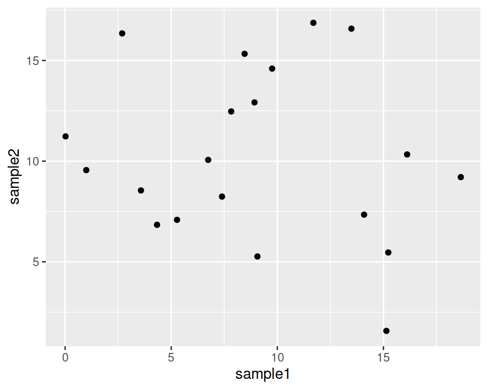
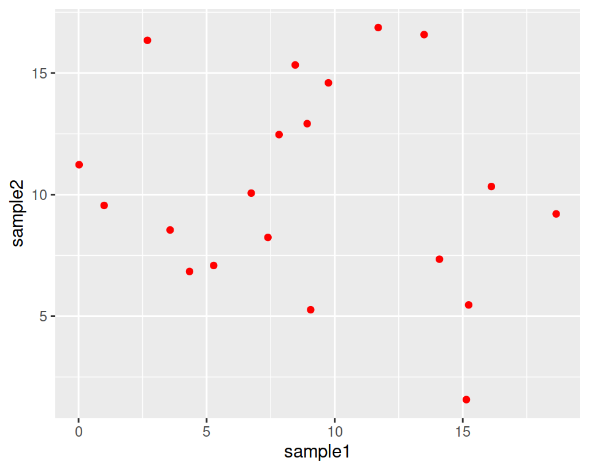
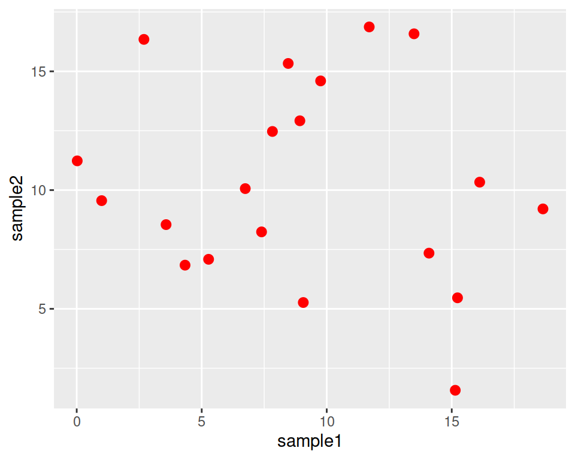

8.2 Scatter plot
8.2.1 Base plot
We can start from the geneexp object, that contains the content of file expression_20genes.csv: we want to plot sample1 on the x axis and sample2 on the y axis.
The base layer will be the following:
Adding to this the layer / block called geom_point that will tell ggplot to produce a scatter/point plot:
# This line is a comment: a comment is not interpreted by R.
# Example of a scatter plot: add the geom_point() layer
ggplot(data=geneexp, mapping=aes(x=sample1, y=sample2)) +
geom_point()
Your plot should appear in the “Plots” tab in the bottom-right panel.
8.2.2 Customize the points
geom_point() also takes some parameters, including the color of the point, and their size:
Color all points in red:

Make points larger (size default is 1.5):

You can also have different shapes for the points!
This is done by setting the shape parameter in geom_point().
For example, triangles:
ggplot(data=geneexp, mapping=aes(x=sample1, y=sample2)) +
geom_point(color="red", size=2.5, shape="triangle")

Image from ggplot2 documentation
8.2.3 Add more layers
We can add more layers to the plot, using the same structure!
8.2.3.1 ggtitle()
For example, let’s add a title using the ggtitle() layer:
ggplot(data=geneexp, mapping=aes(x=sample1, y=sample2)) +
geom_point(color="red", size=2.5, shape="diamond") +
ggtitle(label="my first ggplot")
label is a parameter of ggtitle() function.
8.2.3.2 Background
Not a big fan of the grey background? This is the default “theme”, but there are more options.
For example:
ggplot(data=geneexp, mapping=aes(x=sample1, y=sample2)) +
geom_point(color="red", size=2.5, shape="diamond") +
ggtitle(label="my first ggplot") +
theme_linedraw()